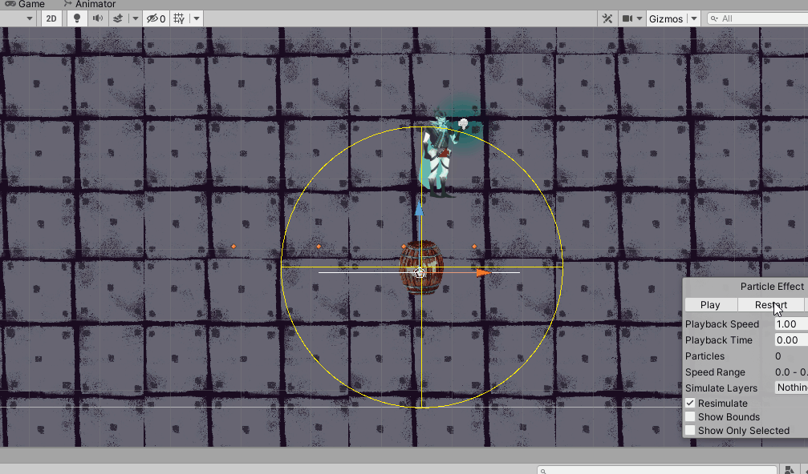
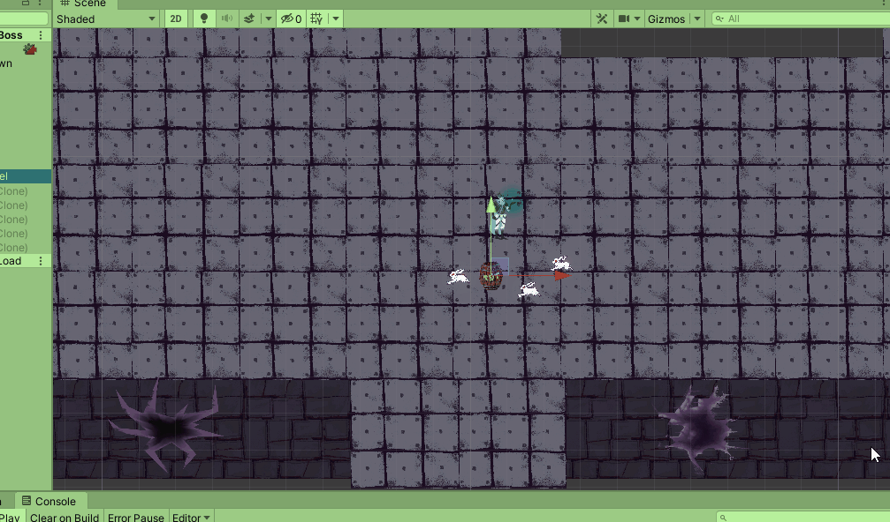

Finished
Project TypeUniversity / group project (4 persons)
Recent update / solo
Project Duration~two months
~july 2020 - november 2022
Software UsedUnity Engine, Audacity
Primary Role(s) 2017Level designer / coding / Combat Designer
Primary Role(s) 2020/2022Yes
This project started in the 2nd year at Collegium Da Vinci. In project participated three programes and one graphic designer. The goal was to create a game that combine platformer, top-down and endless runner genres. This is my first project in Unity Engine, thanks to which i learned a lot of things about Unity and C#. In July 2020, I decided to rework the project by adding many missing features, e.g. character animations, refining the main mechanics and improving the visuals. I started the first work by rewriting all the scripts and then added the Universal Render Pipeline.
-
top-down mechanics
-
jump and slide for player in "Endless run"
-
object pooling for player and boss bullets
-
rabbits and horde chase after player
-
enemy and boss fight
-
creating top-down maps
-
healing carrot
-
guardian rabbit with pickable carrot
-
title screen, main menu and storry
-
sound editing and implementation
-
writing scripts for UI
-
cooperating with team
A brief description of the changes. There is smaller descriptions between the photos and at the bottom there is a gallery.
I decided to start the refresh, by adding URP and using 2D Light to build the lighting and atmosphere to the scenes. I also decided to abandon platform levels in favor of focusing on top-down and endless run levels. All levels top-down were rebuilt and enlarged to allow for exploration of the levels. Most of the 2D art was redrawn or completely re-created. There are various objects placed on the stages with which you can interact, e.g. wooden barrels, after destroying them, a random amount of coins pops out, which can be used for trading. , bushes that illuminate the environment move when we enter them and a particle effect will be activated along with sound. The state of barrels, barriers or crates is saved after moving to another level and after returning they are moved or deactivated, depending on what we did with them earlier. I also added "hay", which is the equivalent of save points to which we return after death. I also created AudioManager, whose task is to smoothly change sounds depending on the situation. There will be a different sound when running in the forest or when escaping, and a completely different one is triggered when starting a fight. All sounds occurring in the environment were converted into spatial 3D so that we could hear them from the left or right.
Explosion particle effect
One of the effects when a barrel explodes is when we manage to defeat the opponent with explosion, they will fly away to the sides of the screen and what the gif isnt showing is black smoke along with them flying.
The default enemy the rabbit, has been completely redesigned. It now has two attacks animated attack, particle effects and sound effects. Enemies are now divided into groups. If the player alerts one enemy, the rest of the group will be alerted as well. Some enemies drop "Evil Carrotine", which either runs away from the player or performs a ranged attack. If the player kills it, it will drop additional coins to use in the shop. I also added a new enemy "Celery", which has two close-range attacks. If the players moves too far away from it, it will start rolling towards them. When the player deals 75% damage to it, it will start flashing, accelerating and explosion area will appear around it. Then we have a few seconds to defeat it before explosion. Each enemy has a small introductory cutscene. There are also rooms where "Carrotine"-s move around. When we approach them, they will follow us and we can give them orders. Additionally, the state of the enemies is saved when we move to another level. So if we defeat the enemies in one level and return to it from another, they will not appear. Only after the player's death is there a restart and they appear again. Enemies also received (A* Pathfinding Project), Previously, they moved in a straight line to the player without avoiding any obstacles.
The next step was to improve boss fights. The final boss was completely redesigned, with animations and additional sound effects. It now has three phases, each with additional attacks, and the third phase begins with a bullet hell that player must be survived. There are four healing carrots and four crates in each corner of the arena, where the player can hide and catch their breath. They can hide behind them until the third phase, then they are burned. There is also a spawn point (aka bonfire) set up in front of the arena, where the player can return to the fight more quickly after a defeat.